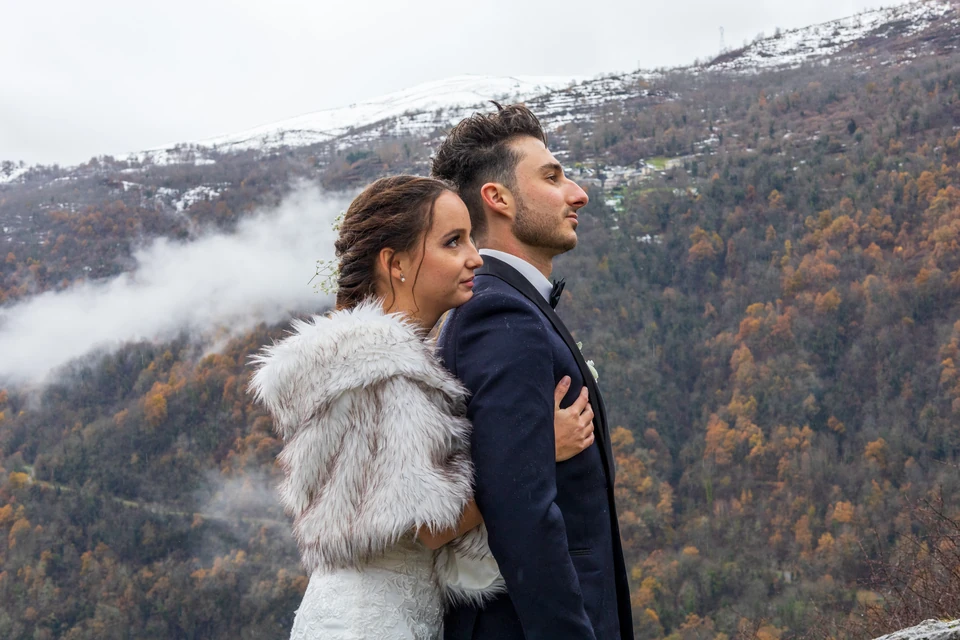
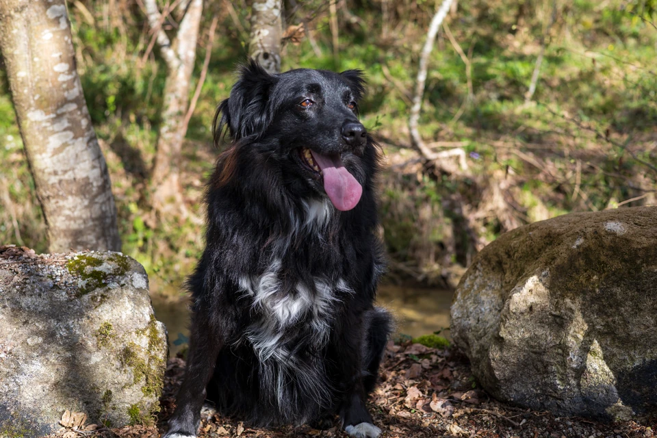

Des portraits
qui vous ressemblent.
Des images naturelles, prises sans précipitation, pour garder des moments qui vous ressemblent.
Découvrir le portfolio L’image, simplement.
L’image, simplement.
Chaque visage a
sa lumière.
Seul, à deux, en famille, avec votre animal ou pour un projet professionnel : chaque séance s’adapte à vos envies et au lieu qui vous correspond.
 Portrait individuel
Voir la galerie ↗
Portrait individuel
Voir la galerie ↗
 Couple & famille
Voir la galerie ↗
Couple & famille
Voir la galerie ↗
 Professionnels
Voir la galerie ↗
Professionnels
Voir la galerie ↗

Événements Voir la galerie ↗
Animaux Voir la galerie ↗Portrait individuel, Couple & famille, Professionnels, Événements et Animaux : cinq galeries à découvrir.
Des images pour
vos envies.
En extérieur, à domicile ou dans un lieu défini ensemble, nous préparons une séance adaptée à vos envies, à votre rythme et à votre projet.
Après la prise de vue, je sélectionne et retouche avec soin les meilleures photographies pour vous livrer un ensemble cohérent en haute définition. Ces images sont incluses dans la prestation, sans nombre prédéfini.
Portrait individuel
80 €Une séance pour vous mettre à l’aise et créer des portraits naturels. Nous prenons le temps de varier les attitudes et les cadrages.
Duo / Couple
110 €En couple, entre amis ou entre proches : une séance à deux pour garder des images de votre complicité et de vos moments partagés, dans une ambiance détendue.
Famille / Groupe
140 €Des portraits de groupe et des moments spontanés, en laissant à chacun le temps de trouver sa place, notamment aux enfants.
Jusqu’à 6 personnes. Au-delà, sur devis.
Professionnels
Sur devisPortraits, équipe, locaux, produits et savoir-faire : des photographies pour mettre en valeur votre activité.
La prestation et les droits d’utilisation sont définis selon vos besoins et vos supports de communication.
Événements
Sur devisMariage, anniversaire, baptême, soirée ou événement associatif et professionnel : des images pour conserver les moments importants, les personnes et l’ambiance.
La prestation s’adapte au lieu, à la durée de présence souhaitée et aux moments à couvrir.
Projet sur mesure
Sur devisPortrait créatif, séance avec votre animal, projet artistique ou demande particulière : échangeons pour construire une prestation adaptée à votre idée.
Déplacements et réservation
Les déplacements sont inclus dans un rayon de 20 km autour de Foix. Au-delà, les frais sont précisés dans le devis avant réservation.
Le lieu, les participants et le déroulement sont définis ensemble. Les éventuels frais de location sont annoncés avant réservation.
Prendre le temps
de créer ensemble.
Chaque séance est pensée pour s’adapter à vos envies, à votre rythme et à votre projet.
Je prends le temps de vous accompagner et de varier les prises de vue pour créer des images naturelles. Après la séance, je sélectionne et retouche avec soin les meilleures photographies, afin de vous livrer un ensemble cohérent en haute définition.
Parlons de
votre projet.
Décrivez-moi la séance que vous imaginez. Je prendrai le temps de vous répondre et de préparer une proposition adaptée.